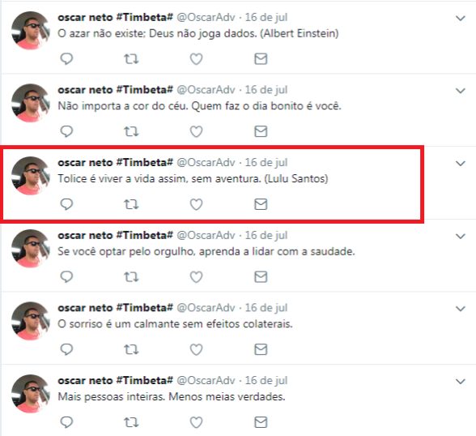
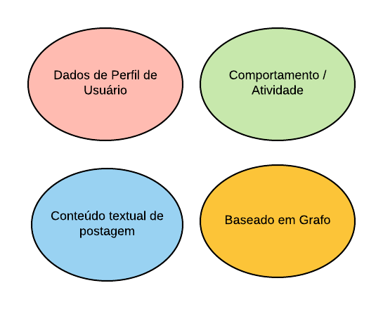
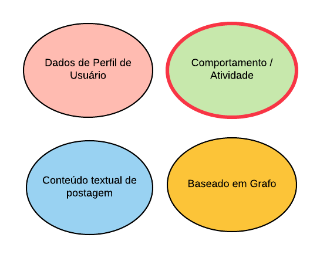

Reconhecimento de Contas Falsas no Twitter
Um pouco sobre mim:
- Meu nome é Francisco
- Ncex: Laboratorio de Inteligência Computacional Aplicada (LICA)
- 5º periodo de CC
Objetivo:
- Apresentar minha pesquisa no LICA
- Explicar um pouco sobre metodologia cientifica
- Apresentar um pouco de Aprendizagem de Máquina
(Machine Learning)
Classificação

Gato

Cachorro
- Que tipo de dados devo coletar?
- Quais dados são mais importantes?
- Quais as diferenças entre contas legítimas e contas falsas?
- Quais são as características de uma conta falsa? como se comporta?
- Como coletar os dados?
- Postar informações repetididas (links, frases de efeito)
- Disseminar informações falsas
- Servir para inflar o número de seguidores de outra conta
- Produzir muitas postagens em um curto periodo de tempo

Metodologias
Metodologias
- Intervalo de postagens
- Frequência Relativa dos dias da semana
- Hashtags (conteúdo textual)
- Twitter API
- Tweepy - Biblioteca facilitadora da API do Twitter
- Coletar dados: https://github.com/vieirafrancisco/collect-twitter-data
- Pré-processamento: https://github.com/vieirafrancisco/twitter-behavioral
- MLP
- Random Forest
- K-means